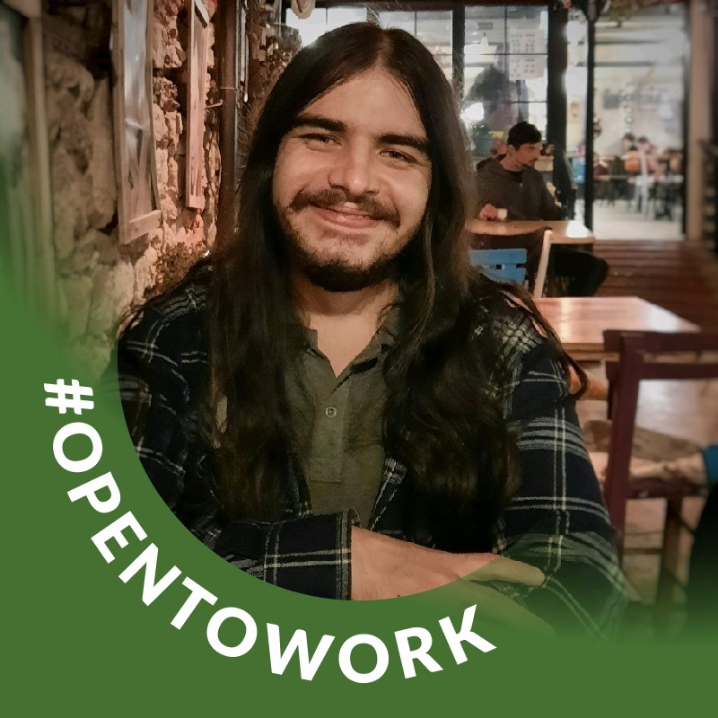
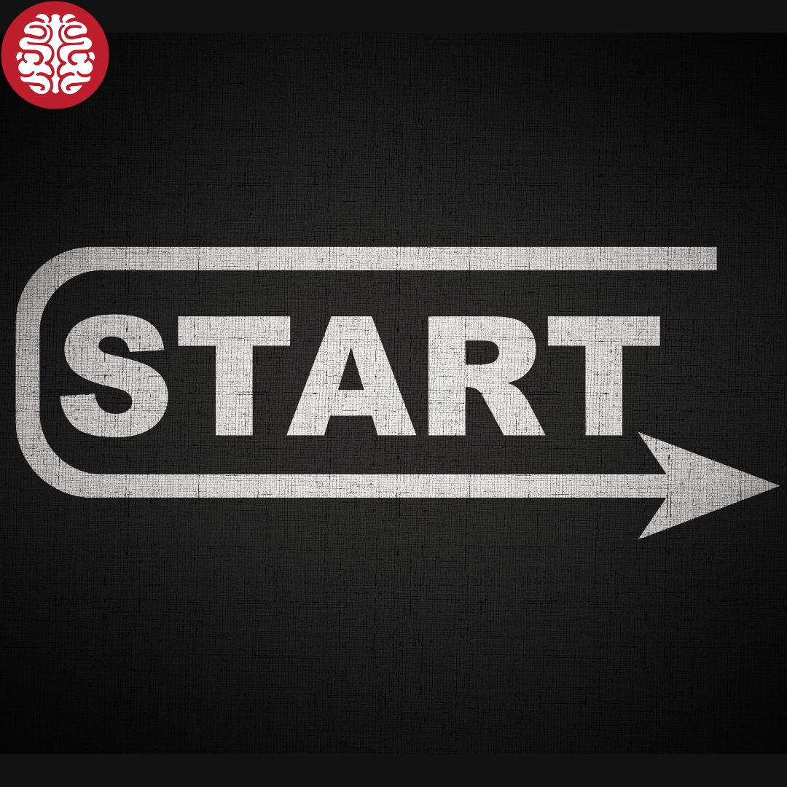

Software Developer at Navlungo - Dijital Lojistik Platformu
Profilinizi kimler görüntüledi
447
Yayınınız için görüntüleme
150
Sayfalarım

Kablosuz Beyin
Sayfa Bildirimleri
10
En Yeni
kodluyoruz
front-end
html
css
bootstrap
Gruplar
Etkinlikler
+
Takip edilen hashtagler
kodluyoruz
front-end

They have done great things! Tebrikler Kodluyoruz!


 958
958
Erhan Erkut hocamız ile birlikte YetGen'de harika şeyler yapmak için geliyoruz!
 210
210

Ramazan Sancar
Co-Founder
at Kablosuz Beyin | Intern & Community Lead at Kod...
25a
Cat Özel Harekat'a katılmak isteyenleri şöyle alalım..

224
Akışınıza ekleyin
 Codecraft
Codecraft
Podfresh
 Navlungo
Navlungo
Bugünün en çok izlenen eğitimleri
-
The Six Morning Habits of High Perf...
Pete Mocakatais | How to be awesome at you...
-
Onconscious Blas
Stacey Gordon
-
Critical Thinking for Better Judgme...
Becki Saltzman
Hakkında
Erişilebilirlik
Yardım Merkezi
Gizlilik ve Koşullar
Reklam Tercihleri
Reklam
 Linkedin Corporation ©
2021
Linkedin Corporation ©
2021